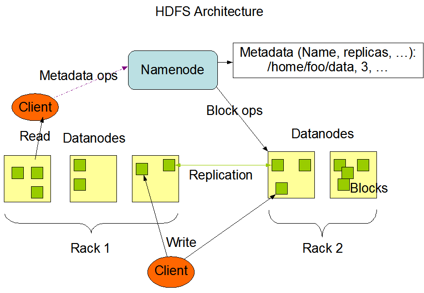

大数据相关知识点
1、HDFS
HDFS概念
HDFS 是一个分布式的文件系统，由很多服务器联合起来实现其功能。
优点
高容错性、适合处理大量的数据、可以构建在廉价的机器上。
缺点
不适合低延时访问、无法对大量 的小文件进行存储、不支持并发写和修改。
组成架构

HDFS读写数据的流程
读数据流程：
-
客户端与 NameNode 通信查询元数据，找到数据块所在的 DataNode 节点；
-
挑选一个 DataNode 节点（就近原则），请求建立 Socket 流；
-
DataNode 开始发送数据；
-
客户端以 package 为单位接收，现在本地缓存，然后写入文件，后续的 block 块 append 到前面的 block，最终合成需要的数据块。
写数据流程：
-
客户端与 NameNode 通信请求上传文件，NameNode 检查文件是否存在，父目录是否存在；
-
NameNode 发出响应，是否可以上传；
-
若可以上传，client 会先对文件进行切分，默认一个 block 大小为 128M， 如果文件为 300M，就会被切分为三块，128M、128M、44M，请求第一个 block 该传输到哪个 DataNode 节点上；
-
NameNode 返回 DataNode ；
-
client 请求一台 DataNode 上传数据，第一个DataNode 收到请求会继续调用第二个 DataNode，然后继续调用第三个 DataNode，建立连接，逐级返回给 client；
-
client 开始往第一个 DataNode 上传第一个 block，第一台 DataNode 收到一个 packet 就回传给第二个 DataNode，第二个再传给第三个；
-
当一个 block 传输完成，client 再次请求 NameNode 上传第二个 block，依次执行，直到结束。
2、Hadoop2.0的改动
- 加入了资源调度框架 Yarn；
- Resource Manager：ResourceManager 包含两个主要的组件：定时调度器(Scheduler)以及应用管理器(ApplicationManager)。
- 定时调度器(Scheduler)：定时调度器负责向应用程序分配资源，它不做监控以及应用程序的状态跟踪，并且它不保证会重启由于应用程序本身或硬件出错而执行失败的应用程序。
- 应用管理器(ApplicationManager)：应用程序管理器负责接收新任务，协调并提供在ApplicationMaster容器失败时的重启功能。
- Application Master：每个应用程序的 ApplicationMaster 负责从 Scheduler 申请资源，以及跟踪这些资源的使用情况以及任务进度的监控。
- Node Manager：NodeManager 是ResourceManager 在每台机器的上代理，负责容器的管理，并监控他们的资源使用情况（cpu，内存，磁盘及网络等），以及向 ResourceManager/Scheduler 提供这些资源使用报告。
- Resource Manager：ResourceManager 包含两个主要的组件：定时调度器(Scheduler)以及应用管理器(ApplicationManager)。
- 针对 Hadoop1.0 中 NameNode 制约 HDFS 的拓展性问题，提出了 HDFSFederation 以及高可用 HA。
3、Spark与MR的区别
-
MR 是基于进程，Spark 是基于线程
Spark 的多个 task 跑在同一个进程上，这个进程会伴随 Spark 应用程序的整个生命周期，即使没有作业进行，进程也是存在的
MR 的每一个 task 都是一个进程，当 task 完成时，进程也会结束
MR 启动就需要申请资源，用完就销毁，但是 Spark 把进程拿到以后，这个进程会一直存在，即使没有 job 在跑，所以后边的 job 可以直接启动，不需要再重新申请资源。
-
Spark把运算的中间数据存放在内存，迭代计算效率更高；MR的中间结果需要落地，需要保存到磁盘，这样必然会有磁盘IO操作，影响性能；
-
spark容错性高，它通过弹性分布式数据集RDD来实现高效容错，RDD是一组分布式的存储在节点内存中的只读性质的数据集，这些集合石弹性的，某一部分丢失或者出错，可以通过整个数据集的计算流程的血缘关系来实现重建；MR的话容错可能只能重新计算了，成本较高；
-
spark更加通用，spark提供了transformation和action这两大类的多个功能的api，另外还有流式处理sparkstreaming模块，图计算GraphX等；MR只提供了map和reduce两种操作，流计算以及其他模块的支持比较缺乏；
-
Spark框架和生态更为复杂，首先由RDD、血缘lineage、执行时的有向无环图DAG、stage划分等等，
很多时候spark作业都需要根据不同的业务场景的需要进行调优，以达到性能要求，MR框架及其生态相对较为简单，对性能的要求也相对较弱，但是运行较为稳定，适合长期后台运行。
4、Spark的shuffle
shuffle: 把一组有一定规则的数据尽量转换成一组无规则的数据，越随机越好。MapReduce中的Shuffle更像是洗牌的逆过程，把一组无规则的数据尽量转换成一组具有一定规则的数据。
MapReduce：Map是映射，负责数据的过滤分发；Reduce是规约，负责数据的计算归并。Reduce的数据来源于Map，Map的输出即是Reduce的输入，Reduce需要通过Shuffle来获取数据。从Map输出到Reduce输入的整个过程可以广义地称为Shuffle。
-
ShuffleMapStage 与 FinalStage(resultStage)
在划分 stage 时，最后一个 stage 称为 FinalStage，它本质上是一个 ResultStage 对象，前面的所有 stage 被称为 ShuffleMapStage。 ShuffleMapStage 的结束伴随着 shuffle 文件的写磁盘。 ResultStage 基本上对应代码中的 action 算子，即将一个函数应用在 RDD 的各个 partition 的数据集上，意味着一个 job 的运行结束。 -
Shuffle 中的任务个数
Spark Shuffle 分为 map 阶段和 reduce 阶段，即 ShuffleRead 和 ShuffleWrite 阶段 假设初始 Partition 个数为 N，初始 RDD 经过一系列算子计算后（假设没有执行 repartition 和 coalesce 算子进行重分区），则分区个数不变，仍为 N，当执行到 Shuffle 操作时， map 端的 task 个数和 partition 个数一致，即 map task 为 N 个。 reduce 端的 stage 默认取 spark.default.parallelism 这个配置项的值作为分区数， 如果没有配置，则以 map 端的最后一个 RDD 的分区数作为其分区数（也就是 N）， 那么分区数就决定了 reduce 端的 task 的个数。 -
reduce 端数据的读取
1. map task 执行完毕后，本进程中的 MapOutPutTrackerWorker 对象将 mapStatus 对象发送给 Driver 进程的 MapOutPutTrackerMaster 对象； 2. reduce task 执行之前会向 Driver 中的 MapOutPutTrackerWorker 发送请求，获取文件信息； 3. map task 执行完毕后，reduce task 就会去拉取数据，最多拉取 48M 的数据，将数据拉取到 Executor 中。 -
两个核心 Shuffle (HashShuffle 和 SortShuffle)
HashShuffle
如果每个 Executor 只有一个 CPU core，每个Executor 只能执行一个 task。Shuffle 类的算子将每个 task 处理的数据按 key 进行“ 划分”。所谓“ 划分”，就是对相同的 key 执行 hash 算法，从而将相同 key 都写入同一个磁盘文件中，而每一个磁盘文件都只属于下游 stage 的一个 task。在将数据写入磁盘之前，会先将数据写入内存缓冲中，当内存缓冲填满之后，才会溢写到磁盘文件中去。下一阶段 task有多少个，当前阶段的 task 就会产生多少文件，这种操作会产生大量的磁盘文件。 read 阶段的过程，就是一边拉取一边聚合文件。 优化后
设置参数 spark.shuffle.consolidateFiles，该参数默认值为 false，将其设置为 true 即可开启优化机制 以 Executor 为单位，一个 Executor 有多少个 CPU core，就可以并行执行多少个 task。每个 task 产生的数据，都会写入对应的 buffer 中，这样可以有效的将多个 task 的磁盘文件进行一定程度上的合并，从而大幅度减少磁盘文件的数量，提升性能。SortShuffle
SortShuffleManager 的运行机制主要分成两种，一种是普通运行机制，另一种是 bypass 运行机制。当 shuffle read task 的数量小于等于 spark.shuffle.sort.bypassMergeThreshold 参数的值时（ 默认为 200），就会启用 bypass 机制。普通运行机制
在该模式下，数据会先写入一个内存数据结构中，如果是 reduceByKey 这种聚合类的 shuffle 算子，那么会选用 Map 数据结构，一边通过 Map 进行聚合，一边写入内存； 如果是 join 这种普通的 shuffle 算子，那么会选用 Array 数据结构，直接写入内存。如果内存数据达到临界阈值的话，那么就会尝试将内存数据结构中的数据溢写到磁盘，然后清空内存数据结构。在溢写到磁盘文件之前，会先根据 key 对内存数据结构中已有的数据进行排序。排序过后，会分批将数据写入磁盘文件。之后，将这些磁盘文件进行 merge 合并，由于一个 task 就只对应一个磁盘文件，也就意味着该 task 为下游 stage 的 task 准备的数据都在这一个文件中，因此还会单独写一份索引文件，所以下游的 task 会根据索引文件，读取对应的数据。bypass 运行机制
bypass 运行机制的触发条件： 1. shuffle map task 数量小于 spark.shuffle.sort.bypassMergeThreshold 参数的值 2. 不是聚合类的 shuffle 算子 源码： private[spark] object SortShuffleWriter { def shouldBypassMergeSort(conf: SparkConf, dep: ShuffleDependency[_, _, _]): Boolean = { // We cannot bypass sorting if we need to do map-side aggregation. if (dep.mapSideCombine) { require(dep.aggregator.isDefined, "Map-side combine without Aggregator specified!") false } else { val bypassMergeThreshold: Int = conf.getInt("spark.shuffle.sort.bypassMergeThreshold", 200) dep.partitioner.numPartitions <= bypassMergeThreshold } } }该机制与普通 SortShuffleManager 运行机制的不同在于： 第一， 磁盘写机制不同；第二，不会进行排序。也就是说，启用该机制的最大好处在于， shuffle write 过程中，不需要进行数据的排序操作，也就节省掉了这部分的性能开销。
5、StringBuilder 与 StringBuffer 的区别
1. String类是不可变类，任何对String的改变都会引发新的String对象的生成；
2. StringBuffer则是可变类，任何对它所指代的字符串的改变都不会产生新的对象;
3. StringBufferd支持并发操作，线性安全的，适合多线程中使用。StringBuilder不支持并发操作，线程不安全的，不适合多线程中使用。新引入的StringBuilder类不是线程安全的，但其在单线程中的性能比StringBuffer高。
6、HashMap 与 Hashtable 的区别
1. Hashtable继承自Dictionary类，而HashMap继承自AbstractMap类。但二者都实现了Map接口;
2. Hashtable 中的方法是Synchronize的，而HashMap中的方法在缺省情况下是非Synchronize的。在多线程并发的环境下，可以直接使用Hashtable，不需要自己为它的方法实现同步，但使用HashMap时就必须要自己增加同步处理。
HashMap 实现线程安全
1. Map<String, String> map = new ConcurrentHashMap<>();
2. Map<String, String> map = new Hashtable<>()
3. Map<String, String> map = Collections.synchronizedMap(new HashMap<String, Strinig>());
7、二叉树的数据结构是什么样的
1. 二叉树是一种特殊的树，他的每个节点最多有两个子树，有左右之分，且次序不能颠倒；
2. 一颗深度为k且有 2^k-1 个结点的二叉树为满二叉树；
3. 如果一个树的深度为k，有n个结点的二叉树，如果其每一个结点都与深度为k 的满二叉树中编号从1 至n 的结点一一对应，则称之为完全二叉树。
4. 性质：
在二叉树的第i层上最多有 2^(i-1) 个结点
深度为k的二叉树最多有 2^i-1 个结点
8、数据库索引的实现原理
索引
索引（Index）是帮助MySQL高效获取数据的数据结构。可以得到索引的本质：索引是数据结构。
数据本身之外，数据库还维护着一个满足特定查找算法的数据结构，这些数据结构以某种方式指向数据，这样就可以在这些数据结构的基础上实现高级查找算法，这种数据结构就是索引。
B树的性质
1. B-TREE: (B:balance) 会自动根据两边的情况自动调节，使两端无限趋近于平衡状态。可以使性能最稳定。(myisam使用的方式)
2. B-TREE弊端：(插入/修改操作多时，B-TREE会不断调整平衡，消耗性能)从侧面说明了索引不是越多越好。
3. B+TREE:Innodb 所使用的索引
优势
1. 类似大学图书馆建书目索引，提高数据检索的效率，降低数据库的IO成本；
2. 通过索引列对数据进行排序，降低数据排序的成本，降低了CPU的消耗。
劣势
1. 实际上索引也是一张表，该表保存了主键与索引字段，并指向实体表的记录，所以索引列也是要占用空间的
2. 对表进行INSERT、UPDATE和DELETE，因为更新表时，MySQL不仅要保存数据，还要保存一下索引文件每次更新添加了索引列的字段，都会调整因为更新所带来的键值变化后的索引信息，降低速率
3. 索引只是提高效率的一个因素，如果你的MySQL有大数据量的表，就需要花时间研究建立最优秀的索引，或优化查询语句
B树

B+树

1. B+TREE 第二级的数据并不能直接取出来，只作索引使用。在内存有限的情况下，查询效率高于 B-TREE
2. B-TREE 第二级可以直接取出来，树形结构比较重，在内存无限大的时候有优势。
B树和B+树的区别
1. B+Tree与B-Tree 的区别：结论在内存有限的情况下，B+TREE 永远比 B-TREE好。无限内存则后者方便
2. B-树的关键字和记录是放在一起的，叶子节点可以看作外部节点，不包含任何信息；B+树子节点中只有关键字和指向下一个节点的索引，记录只放在叶子节点中。(一次查询可能进行两次i/o操作)
3. 在B-树中，越靠近根节点的记录查找时间越快，只要找到关键字即可确定记录的存在；而B+树中每个记录的查找时间基本是一样的，都需要从根节点走到叶子节点，而且在叶子节点中还要再比较关键字。从这个角度看B-树的性能好像要比B+树好，而在实际应用中却是B+树的性能要好些。因为B+树的非叶子节点不存放实际的数据，这样每个节点可容纳的元素个数比B-树多，树高比B-树小，这样带来的好处是减少磁盘访问次数。尽管B+树找到一个记录所需的比较次数要比B-树多，但是一次磁盘访问的时间相当于成百上千次内存比较的时间，因此实际中B+树的性能可能还会好些，而且B+树的叶子节点使用指针连接在一起，方便顺序遍历
9、JVM 垃圾收集器
1. 引用计数法
对象没使用一次就进行计数，计数次数少的将被回收(基本不用)
2. 复制算法
Minor GC会把Eden中的所有活的对象都移到Survivor区域中，如果Survivor区中放不下，那么剩下的活的对象就被移到Old generation中，也即一旦收集后，Eden是就变成空的了。当对象在 Eden ( 包括一个 Survivor 区域，这里假设是 from 区域 ) 出生后，在经过一次 Minor GC 后，如果对象还存活，并且能够被另外一块 Survivor 区域所容纳( 上面已经假设为 from 区域，这里应为 to 区域，即 to 区域有足够的内存空间来存储 Eden 和 from 区域中存活的对象 )，则使用复制算法将这些仍然还存活的对象复制到另外一块 Survivor 区域 ( 即 to 区域 ) 中，然后清理所使用过的 Eden 以及 Survivor 区域 ( 即 from 区域 )，并且将这些对象的年龄设置为1，以后对象在 Survivor 区每熬过一次 Minor GC，就将对象的年龄 + 1，当对象的年龄达到某个值时 ( 默认是 15 岁，通过-XX:MaxTenuringThreshold 来设定参数)，这些对象就会成为老年代。
一般在年轻代中使用
缺点：浪费内存
3. 标记清除法
标记：从引用根节点开始标记遍历所有的GC Roots， 先标记出要回收的对象。
清除：遍历整个堆，把标记的对象清除。
缺点：会暂停整个应用，会产生内存碎片
4. 标记压缩法
在整理压缩阶段，不再对标记的对像做回收，而是通过所有存活对像都向一端移动，然后直接清除边界以外的内存。可以看到，标记的存活对象将会被整理，按照内存地址依次排列，而未被标记的内存会被清理掉。如此一来，当我们需要给新对象分配内存时，JVM只需要持有一个内存的起始地址即可，这比维护一个空闲列表显然少了许多开销。
缺点：效率较低
老年代一般是由标记清除或者是标记清除与标记整理的混合实现
10、讲讲 NameNode 和 DataNode
HDFS是以 NameNode 和 DataNode 管理者和工作者模式运行的。
NameNode 的作用管理整个文件系统的命名空间。维护整个文件系统树及其内部的文件和目录，这些信息以命名空间镜像和编辑日志方式持久化到磁盘上。并且 NameNode 记录着各个块所在的节点信息,但这个并不是永久保存的，因为每次启动系统这些节点会有DataNode重建。
DataNode 负责存储和检索数据块，他受客户端和 NameNode 调度，并且他会定期向 NameNode 发送本节点上所存储的块列表，这就是为什么 NameNode 并不是永久保存各个节点块的信息原因了。
能看到 NameNode 的重要性，因为如果 NameNode 挂掉之后，无法根据 DataNode 上的数据重建文件。所以一般有两种机制进行对 NameNode 的容错。第一将 NameNode 上的元数据信息持久化到本地磁盘的同时，同时备份到一个挂载的远程网络文件系统上 NFS。第二使用辅助 NameNode，也就是 SecondaryNameNode，SecondaryNameNode 会定期通过编辑日志合并镜像文件，防止编辑日志过大。但是他存在的问题在于总是滞后于 NameNode 的。所以一般可以将远程 NFS 的元数据复制到辅助 NameNode 上，辅助 NameNode 作为新的NameNode。
11、行式存储与列式存储的优劣
优缺点
行式存储：
行存储的写入是一次性完成，消耗的时间比列存储少，并且能够保证数据的完整性，缺点是数据读取过程中会产生冗余数据，如果只有少量数据，此影响可以忽略；数量大可能会影响到数据的处理效率。
列式存储：
列存储在写入效率、保证数据完整性上都不如行存储，它的优势是在读取过程，不会产生冗余数据，这对数据完整性要求不高的大数据处理领域，比如互联网，犹为重要。
主要特性
行式存储
1. 数据是按行存储的；
2. 没有索引的查询使用大量I/O。比如一般的数据库表都会建立索引，通过索引加快查询效率；
3. 建立索引和物化视图需要花费大量的时间和资源；
4. 面对查询需求，数据库必须被大量膨胀才能满足需求。
列式存储
1. 数据按列存储，即每一列单独存放；
2. 数据即索引；
3. 只访问查询涉及的列，可以大量降低系统I/O；
4. 每一列由一个线程来处理，即查询的并发处理性能高；
5. 数据类型一致，数据特征相似，可以高效压缩。比如有增量压缩、前缀压缩算法都是基于列存储的类型定制的，所以可以大幅度提高压缩比，有利于存储和网络输出数据带宽的消耗。
12、出现了数据倾斜，如何调优
概念
数据倾斜指的是数据分布是不均匀的，导致有的任务执行的快有的任务执行的慢。
优化方案
若 Map 端发生数据倾斜现象，暂无解决方案。
Reduce 端
1. 大表jion小表。Hive：map side join。Spark：将小表转化为 Map 进行广播，广播会将此 Map 发送到每个节点中，如果不进行广播，每个 task 执行时都会去获取该 Map 数据，造成了性能浪费。
2. 大表jion大表。
3. 如果 group by 出现倾斜：两阶段聚合：阶段一：修改聚合key进行局部聚合。阶段二：按照原始key进行全局聚合。Hive：需要将hive.groupby.skewindata设置为true，这个参数的意思是做reduce操作的时候，拿到的key并不是所有相同值给同一个reduce，而是随机分发，然后reduce做聚合，做完之后再做一轮MR，拿前面聚合过的数据再算结果。
4. 增加jvm内存，适用于唯一值，极少数值有非常多的记录值。
13、对 Hive 的理解
Hive 是基于 Hadoop 的一个数据仓库工具，可以将结构化的数据文件映射为一张数据库表，并使用 SQL 语句转换为 MapReduce 任务进行运行。其优点是学习成本低，可以通过类 SQL 语句快速实现简单的 MapReduce 统计，不必开发专门的 MapReduce 应用，十分适合数据仓库的统计分析。
架构
1. 用户接口：Client
CLI（hive shell）、JDBC/ODBC(java访问hive)、WEBUI（浏览器访问hive）
2. 元数据：Metastore
元数据包括：表名、表所属的数据库（默认是default）、表的拥有者、列/分区字段、表的类型（是否是外部表）、表的数据所在目录等；默认存储在自带的derby数据库中，推荐使用MySQL存储Metastore
3. Hadoop
使用HDFS进行存储，使用MapReduce进行计算。
4. 驱动器：Driver
解析器（SQL Parser）：将SQL字符串转换成抽象语法树AST，这一步一般都用第三方工具库完成，比如antlr；对AST进行语法分析，比如表是否存在、字段是否存在、SQL语义是否有误。
编译器（Physical Plan）：将AST编译生成逻辑执行计划。
优化器（Query Optimizer）：对逻辑执行计划进行优化。
执行器（Execution）：把逻辑执行计划转换成可以运行的物理计划。对于Hive来说，就是MR/Spark。
与其他数据库的区别
1. Hive和关系数据库存储文件的系统不同，Hive使用的是Hadoop的HDFS，关系数据库则是服务器本地的文件系统；
2. Hive使用的计算模型是MapReduce/Spark，而关系数据库则是自身的计算模型；
3. 关系数据库都是为实时查询的业务进行设计的，而Hive则是为海量数据做数据挖掘设计的，实时性很差；实时性的区别导致Hive的应用场景和关系数据库有很大的不同；
4. Hive很容易扩展自己的存储能力和计算能力，这个是继承Hadoop的，而关系数据库在这个方面要比数据库差很多。
14、Hive 是如何转换为 MR 的
Hive通过给用户提供的一系列交互接口，接收到用户的指令(SQL)，使用自己的Driver，结合元数据(MetaStore)，将这些指令翻译成MapReduce，提交到Hadoop中执行，最后，将执行返回的结果输出到用户交互接口。可参考上方的架构图。
15、出现了 OOM 怎么办
1. java.lang.OutOfMemoryError: Java heap space --> java堆内存溢出，此种情况最常见，一般由于内存泄露或者堆的大小设置不当引起。对于内存泄露，需要通过内存监控软件查找程序中的泄露代码，而堆大小可以通过虚拟机参数-Xms,-Xmx等修改。
2. java.lang.OutOfMemoryError: PermGen space --> java永久代溢出，即方法区溢出了，一般出现于大量Class或者jsp页面，或者采用cglib等反射机制的情况，因为上述情况会产生大量的Class信息存储于方法区。此种情况可以通过更改方法区的大小来解决，使用类似-XX:PermSize=64m -XX:MaxPermSize=256m的形式修改。另外，过多的常量尤其是字符串也会导致方法区溢出。
3. java.lang.StackOverflowError --> 不会抛 OOM error，但也是比较常见的Java内存溢出。JAVA虚拟机栈溢出，一般是由于程序中存在死循环或者深度递归调用造成的，栈大小设置太小也会出现此种溢出。可以通过虚拟机参数-Xss来设置栈的大小。
16、shuffle 过程中，会将数据写到哪个 buffer 中
Map是映射，负责数据的过滤分 发；Reduce是规约，负责数据的计算归并。Reduce的数据来源于Map，Map的输出即是Reduce的输入，Reduce需要通过 Shuffle来获取数据。
Map 端的 Shuffle
1. Map 方法之后 Reduce 方法之前这段处理过程叫 Shuffle
2. Map 方法之后，数据首先进入到分区方法，把数据标记好分区，然后把数据发送到环形缓冲区；环形缓冲区默认大小 100m，环形缓冲区达到 80%时，进行溢写；溢写前对数据进行排序，排序按照对 key 的索引进行字典顺序排序，排序的手段快排；溢写产生大量溢写文件，需要对溢写文件进行归并排序；对溢写的文件也可以进行 Combiner 操作，前提是汇总操作，求平均值不行。最后将文件按照分区存储到磁盘，等待 Reduce 端拉取。
3. 每个 Reduce 拉取 Map 端对应分区的数据。拉取数据后先存储到内存中，内存不够了，再存储到磁盘。拉取完所有数据后，采用归并排序将内存和磁盘中的数据都进行排序。在进入 Reduce 方法前，可以对数据进行分组操作
17、executor、core、task 之间的关系
Spark Executor 节点是一个计算对象，负责在 Spark 作业中运行具体任务，任务彼此之间相互独立。Spark 应用启动时， Executor 节点被同时启动，并且始终伴随着整个 Spark 应用的生命周期而存在。如果有 Executor 节点发生了故障或崩溃，Spark 应用也可以继续执行，会将出错节点上的任务调度到其他 Executor 节点上继续运行。
Executor 有两个核心功能：
1. 负责运行组成 Spark 应用的任务，并将结果返回给驱动器进程；
2. 它们通过自身的块管理器（Block Manager）为用户程序中要求缓存的 RDD 提供内存式存储。RDD 是直接缓存在 Executor 进程内的，因此任务可以在运行时充分利用缓存数据加速运算。
<core 工作的线程数>
每个节点可以起一个或多个 Executor。
每个 Executor 由若干 core 组成，每个 Executor 的每个 core 一次只能执行一个 Task。
每个 Task 执行的结果就是生成了目标 RDD 的一个 partiton。
18、Spring
简介
Spring是一个优秀的轻量级框架，大大的提高了项目的开发管理与维护。Spring有两个核心模块。一个是IOC，一个是AOP。
工作原理
spring 是按照设计模式精心打造的，它实现了工厂模式的工厂类，这个类名为BeanFactory（接口），在程序中通常使用它的子类ApplicationContext(也是接口)。
spring的核心是IOC(控制反转)容器，IOC也是一种编程思想，用于实现模块之间的解耦，在Spring中它的作用是对对象的创建，维护和销毁等生命周期的控制。IOC:把对象的创建、初始化、销毁交给spring来管理，而不是由开发者控制，实现控制反转。
spring是一个大的工厂类，spring的特点就是基于配置，在其配置文件中通过<bean>元素来创建实例对象。
根据业务逻辑来看，对象经常不是独立的，一个对象的创建往往涉及另一个对象的创建，当然这个对象也要由IOC容器负责，负责的方式就是依赖注入DI,通过反射机制实现。有三种注入方式：（1）接口注入（2）构造器注入（3）Setter方法注入。
AOP(Aspect Oriented Programing) 面向切面编程 = Spring 动态代理开发
以切面为基本单位的程序开发，通过切面间的彼此协同，完成程序的构建
切面 = 切入点 + 额外功能
本质就是 Spring 的动态代理开发，通过代理类为原始类增加额外功能。
好处：利于原始类的维护
原理：
JVM 创建动态代理
CGlib 创建动态代理